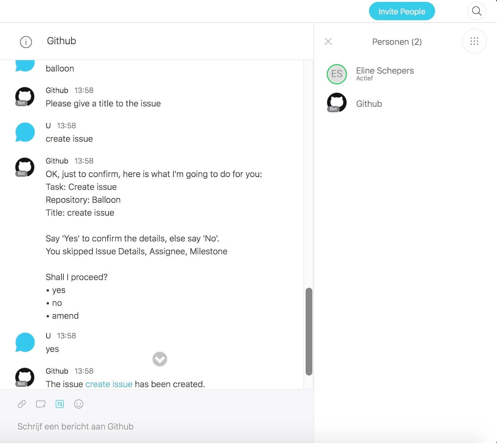
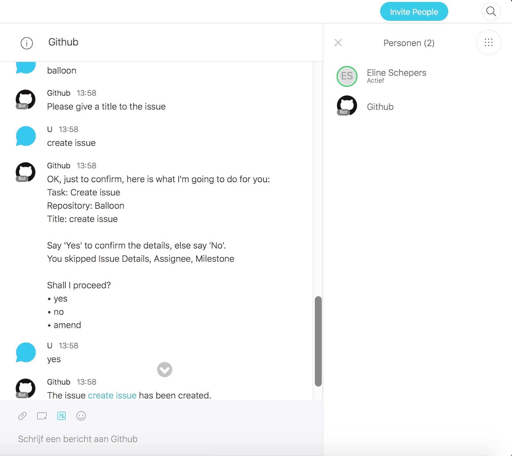
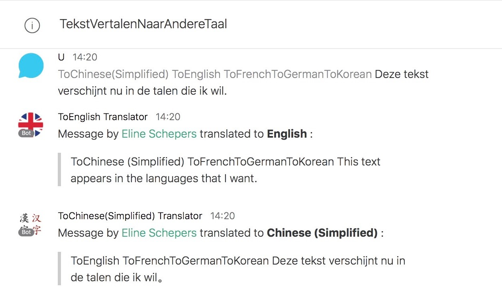
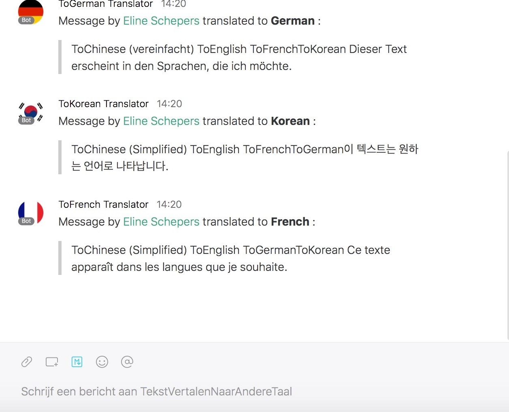
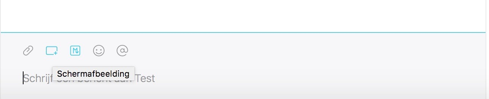
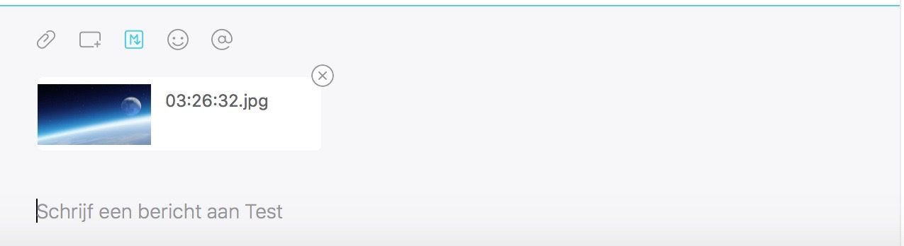
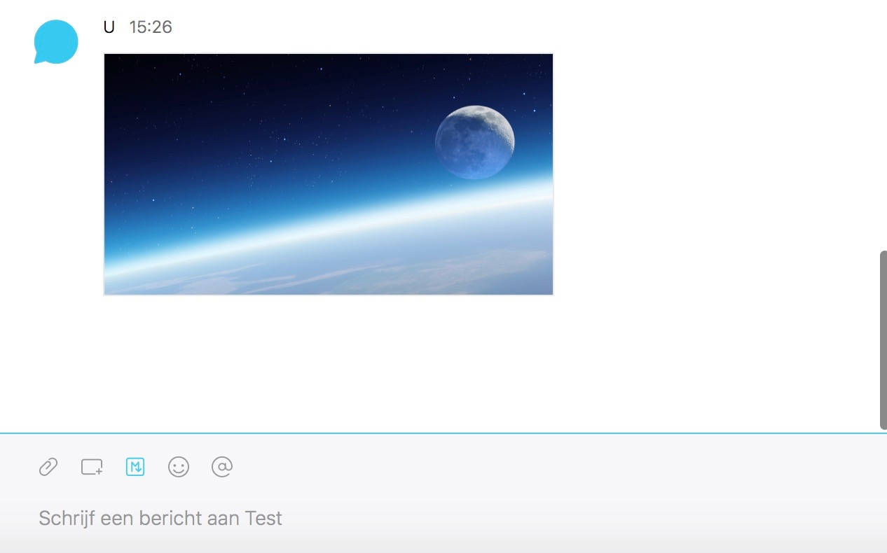
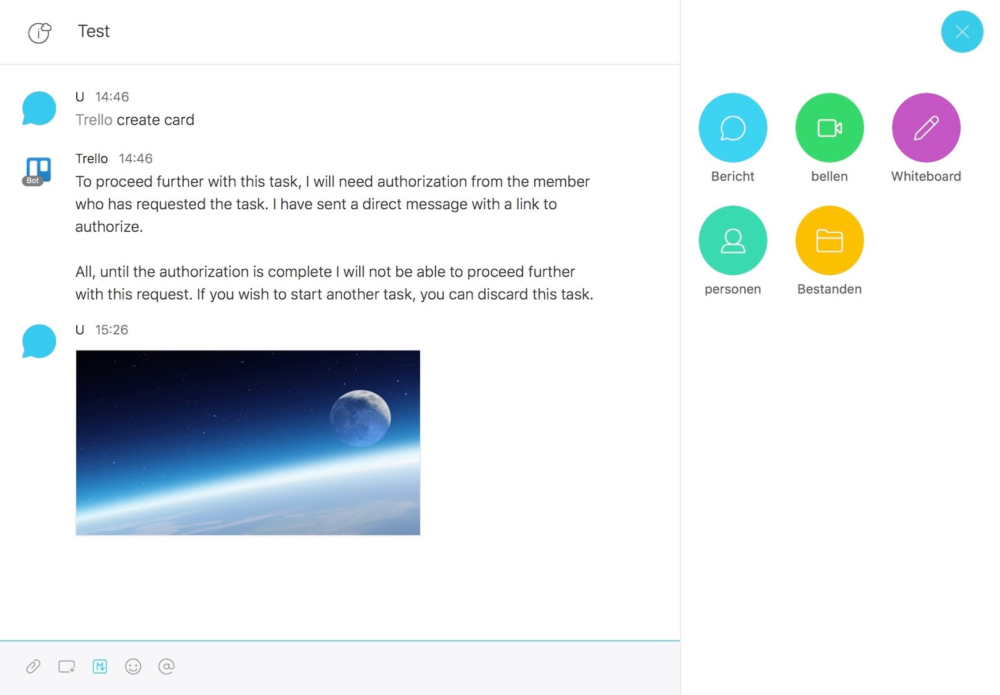

De communicatie tussen het bedrijf in Westerlo en dat in Merelbeke gebeurt nu via skype en slack. Dit zorgt vaak voor bottlenecks. Soms blijft het beeld vastzitten of wordt het geluid verstoord door een echo. Ik ga met deze casestudy nagaan waar het misloopt, of het probleem bij Skype zelf ligt of het ligt aan het netwerk dat misschien te zwak is. De download snelheid van het wifinetwerk is tamelijk snel, 50 Mbps. Maar de upload snelheid bedraagt 8 Mbps, wat wel weinig is als iedereen gebruik maakt van de wifi en er geen gebruik wordt gemaakt van bekabeling. Ook ben ik nagegaan of er sprake was van package loss, maar dat was niet het geval.
Vandaag, woensdag 4 oktober ga ik deelnemen aan een skype gesprek met enkele collega’s in Merelbeke, om tijdens het gesprek te kunnen zien of skype zelf aangeeft dat de netwerkverbinding zwak is.
Skype geeft ook zelf enkele mogelijke oorzaken aan voor een slecht skype-gesprek;
1. Gebruik van de nieuwste versie van Skype
Uiteraard is elke nieuwe versie een verbetering op de oude. Vaak worden er dan ook veel gemelde problemen opgelost en streven ze naar zo een best mogelijke versie van Skype. De nieuwste versie van Skype blijkt 16.0.4561.1000. te zijn. Deze hebben ze zowel hier in Westerlo als in Merelbeke. Dus hier kan het probleem niet liggen.
2. De internetverbinding zelf
Buiten het feit dat je best de nieuwste versie van Skype gebruikt, kunnen er nog altijd bottlenecks voorkomen. Een mogelijk probleem is namelijk dat de internetverbinding gewoon weg niet optimaal werkt. Waardoor het Skypegesprek moeilijker verloopt. De verbinding was volgens Skype goed, zowel bij het bedrijf in Westerlo als het bedrijf in Merelbeke.
3. Verstoring door andere toepassingen
Andere toepassingen die aan het draaien zijn terwijl je een Skype gesprek hebt kunnen dat ook vaak verstoren. Niet elke toepassing natuurlijk, dan spreken we vooral over toepassingen die gebruik maken van streaming van audio of video, toepassingen om bestanden te delen of gewoon weg een geopende webbrowser kan bandbreedte gebruiken. Door de onnodige toepassingen te sluiten was de kwaliteit van het beeld en het geluid beter.
Conclusie
Het probleem ligt niet bij AllPhi’s netwerk. De versie van Skype is bij de nieuwste, de netwerkverbinding was in orde, Skype gaf dit ook zelf aan. Wanneer men onnodige toepassingen sloot was de kwaliteit van beeld en geluid ook goed. Wat ik hier alleen maar uit kan besluiten is dat Skype zelf soms wat storing en bottlenecks vertoond. Dit had ik wel verwacht aangezien ik dezelfde problemen ook vaak bij mij thuis voor heb als ik iemand anders probeer te skypen.
Mogelijk alternatief
Als mogelijk alternatief zou ik Cisco Spark aanraden. Deze heeft dezelfde principe als Skype; kunnen chatten en videochatten met meerdere mensen tegelijkertijd. Cisco Spark heeft wel meerdere handige toepassingen die je niet terugvindt bij Skype. Ook is Cisco Spark met end-to-end-encryptie beveiligd. Dat wil zeggen dat alle informatie wordt versleuteld alvorens het uw pc verlaat. De Cisco Spark control hub is opgenomen in alle betalende versies van Cisco Spark hiermee kunt u uw ‘spaces’ (chatgroepen) beheren. Er bestaat ook een app van Cisco Spark, dat is gemakkelijk voor wanneer u onderweg bent, thuis ben of even geen laptop of pc bij de hand hebt. Als u dan te laat bent voor de meeting kunt u al deelnemen via uw gsm.
Bots via Cisco Spark
Github bot
het voordeel aan Cisco Spark is dat je er bots kan aan toevoegen van b.v. het bekende platform Github. De bot van Github kan een aantal zaken doen; commenten op een issue, een issue aanmaken, een pull request aanmaken. Hij kan ook verwittigen wanneer een commit is geüpdatet, als er een issue is angemaakt en als er een pull request notificatie is . Hieronder zie je een screenshot van een commando dat ik heb uitgevoerd, namelijk het aanmaken van een issue.
 

Translate-to bot
Ook ‘TranslateTo’ bots die uw chatbericht vertalen naar de gewenste taal zijn handig binnen een bedrijf, bijvoorbeeld als je met een buitenlandse klant moet chatten. Binnen een groepschat kun je deze bot zoals elke andere bot aanroepen met ‘@’ en hun naam.
 andere bots te gebruiken binnen Cisco Spark; https://depot.ciscospark.com/bots
Screenshotten via Cisco Spark
Wat ook makkelijker is bij Cisco Spark dan bij Skype is het doorsturen van screenshots. Vaak ben je met iets bezig op je pc of laptop en wil je dat even screenshotten om door te kunnen sturen naar bv. een groep mensen of eerder privé. Dit kan met Cisco Spark zeer gemakkelijk door één druk op de knop, je selecteert dan het veld dat je wil screenshotten en nadien laat je uw muis of de touchpad los. Cisco Spark zet deze dan in de chatbalk onderaan waardoor je enkel nog op enter moet drukken.
1. Het knopje schermafbeelding indrukken (rechthoek met plusje rechts vanonder)
2. selecteren wat je wilt screenshotten
3. muis of touchpad loslaten, u krijgt automatisch dit te zien
4. op enter drukken, u krijgt het volgende te zien;
Handige tools binnen Cisco Spark
Buiten de bots zijn er ook nog veel andere bots die je kan gebruiken bij Cisco Spark zoals vele developer tools en google drive. Je hebt ook de mogelijkheid om een geïntegreerde whiteboard te gebruiken die je tijdens een videochat met andere kunt delen. Je kunt met meerdere tegelijkertijd schrijven op het whiteboard, wat handig kan zijn om te brainstormen zonder in dezelfde kamer te moeten zijn. Een andere leuke optie is het invoegen van bestanden. Hier vind je alle bestanden die ooit zijn verstuurd binnen de chat terug. Zo hoef je niet terug naar boven te scrollen in de chat om bv. een screenshot terug te vinden die je nodig hebt voor iets
Toepassingen die je kunt linken met Cisco Spark
Onedrive en Onenote zijn ook zeer vaak gebruikte tools om bestanden in op te slaan, bewerken (in het geval van onedrive) en te delen. Ook wij op school gebruiken dit. Cisco Spark geeft u de mogelijkheid om uw Onenote, Onedrive en Onedrive voor bedrijven te linken met uw Cisco spark chat space. Dropbox kan ook gelinkt worden met Cisco Spark. Veel andere behulpzame en interessante tools kunnen gelinkt worden met Cisco Spark; https://depot.ciscospark.com/integrations